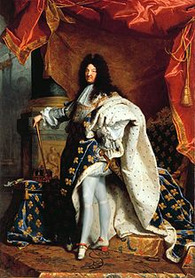

Histoire de France
Histoire de France

Frise chronologique de l'histoire de France
Frise chronologique de l'histoire de France
L'Antiquité est la première des époques de l'Histoire. C'est par le développement ou l'adoption de l'écriture que l'Antiquité succède à la Préhistoire.
Vercingétorix deposant ses armes aux pieds de Jules César
Vercingétorix déposant les armes aux pieds de César après sa défaite à la bataille d’Alésia où il avait réuni tous les peuples Gaulois. Cela termine la conquête de la Gaule en 52 av. JC Vercingétorix (né aux environs de -80 sur le territoire des Arvernes, dans l'actuelle Auvergne, mort le 26 septembre -46 à Rome) est le fils du chef gaulois de la tribu des Arvernes. Il réunit la plupart des peuples gaulois et leurs chefs pour tenter de repousser le général romain Jules César, allié des quelques autres tribus gauloises, à la fin de la guerre des Gaules (-58 à -51). Vaincu à Alésia en -52, il est emprisonné, puis, six ans plus tard, exécuté à Rome à la suite du triomphe de César.
Les Gaulois ont dans leur ensemble assez bien accepté la domination romaine et la France est née du mélange de la culture celtique et de la culture gréco-romaine
Une culture gallo- romaine se développe après l’intégration de la Gaule à l’Empire romain. Les élites gauloises adoptent la culture romaine : elles adoptent le latin, se font construire des villas sur le modèle romain, la France se couvre de monuments romains et de voies romaines : aqueducs comme le Pont du Gard, théâtres romains, arènes, comme à Nîmes, des thermes sont construits,…
Dès lors la Gaule vit comme l’une des provinces de l’immense empire romain .L’empereur romain Claude est d’ailleurs né à Lyon.

Carte de l'Empire romain et des ses différentes provinces
Le Moyen Âge s'étend de 476 à 1492. Il débuta avec l'effondrement de l'Empire romain d'Occident et se termina par la Renaissance et les Grandes découvertes. Située entre l'Antiquité et l'époque moderne, la période est subdivisée entre le haut Moyen Âge (VIe Xe siècle), le Moyen Âge central (XIe XIIIe siècle) et le Moyen Âge tardif (XIVe XVe siècle).

Portrait de Charlemagne
Charlemagne fut un empereur des VIIIe et IXe siècle
Charlemagne du latin Carolus Magnus, ou Charles Ier dit « le Grand », né en 742 et mort le 28 janvier 814 à Aix-la-Chapelle, est un membre de la dynastie franque à laquelle il a donné son nom alors qu'il n'en est pas le fondateur : les Carolingiens. Fils de Pépin le Bref, il est roi des Francs à partir de 768, devient par conquête roi des Lombards en 774 et est couronné empereur à Rome par le pape Léon III le 25 décembre 800. Monarque guerrier, il agrandit son royaume par une série de campagnes militaires, en particulier contre les Saxons païens dont la soumission a été très difficile et très violente (772-804), mais aussi contre les Lombards en Italie et les Musulmans d'Espagne.

Reconstitution de deux chevaliers en armure sur leur cheval
Les chevaliers étaient des nobles qui combattaient pour leurs suzerains au Moyen-âge.
L'époque moderne (ou les temps modernes) couvre l'époque historique commençant à la fin du Moyen Âge, généralement placée en 1453 ou en 1492. Selon les historiens français, cette période s'arrête avec la Révolution française, marquée généralement en 1789 ou 1792, et c'est l'époque contemporaine qui lui succède.
Représentation de Louis XIV, le Roi Soleil
Louis XIV, roi de France au XVIIe siècle
Louis XIV dit Louis le Grand ou le Roi-Soleil, né le 5 septembre 1638 à Saint-Germain-en-Laye et mort le 1er septembre 1715 à Versailles, est un roi de France et de Navarre. Il règne sur le royaume de France du 14 mai 1643 à sa mort le 1er septembre 1715. Louis XIV monte en 1643 sur le trône au décès de son père Louis XIII, le 14 mai 1643, quelques mois avant ses cinq ans. Il est le 64e roi de France, le 44e roi de Navarre et le troisième des rois de la famille Bourbon. Son règne de 72 ans est l’un des plus longs de l'histoire de l'Europe. À partir de 1682, Louis XIV dirige son royaume depuis le vaste château de Versailles, modèle architectural de nombreux palais européens et dont il a dirigé la construction. Une cour soumet la noblesse, étroitement surveillée, à un protocole très élaborée. Le prestige culturel s'y affirme grâce au financement royal en faveur d'artistes tels que Molière, Racine, Boileau, Lully, Le Brun et Le Nôtre, ce qui favorise l'apogée du classicisme français, qualifié, dès son vivant, de « Grand Siècle », voire de « Siècle de Louis XIV ».
Photo du château de Versailles et de ses jardins
Château de Versailles, demeure construite par Louis XIV, dont les magnifiques jardins ont été créés par Le Nôtre
L'époque contemporaine débute en 1789 et se poursuit jusqu'à nos jours. Quelques historiens font finir l'époque moderne en 1895 (invention du cinématographe) ou en 1896 (rénovation des Jeux olympiques), la période suivante et actuelle étant l'ère ou « l'époque de communication, spectacles et sports ». Mais ceci peut être contesté, la première moitié du XXe siècle étant l'aboutissement des idéologies et des nationalismes nés aux XVIIIe et XIXe siècles, les idéologies se radicalisant au XXe siècle et utilisant les médias, spectacles et sports. C'est aussi à l'époque contemporaine que se produit un accroissement démographique sans précédent dans l'histoire de l'humanité.

La prison royale de la Bastille est prise d'assaut
La prise de la Bastille lors de la Révolution Française le 14 juillet 1789. Cette date est devenue la fête nationale.
Cette révolution met fin à la monarchie absolue en France et elle est remplacée par une monarchie constitutionnelle en 1791. La Révolution française est à l’origine d’une déclaration des droits de l’homme et du citoyen qui transforme profondément la société de l’époque : les hommes sont désormais considérés comme libres et égaux en droits et la souveraineté émane désormais du peuple et non plus d’une monarchie de droit divin. La liberté de choisir sa religion est reconnue. La Révolution est aussi à l’origine des structures politiques modernes de la France : la France est découpée en départements, les poids et mesures sont unifiés sur tout le territoire français.
En 1792 la France devient une République, mais celle-ci est éphémère.
En 1799 le coup d’Etat du général Bonaparte signe la mort de la République.
La France connaît en réalité une très forte instabilité politique tout le long du XIXème siècle : entre 1791 et 1871 elle connaît : la monarchie constitutionnelle, le 1er empire et le second empire, 3 révolutions (les 3 Glorieuses en 1830, la révolution de 1848 et l’insurrection de la commune de Paris en 1871) et 2 républiques.
Napoléon Bonaparte, empereur des Français au XIXe
Napoléon Ier, né le 15 août 1769 à Ajaccio en Corse, dans le royaume de France, et mort le 5 mai 1821 sur l'île Sainte-Hélène, dans l'océan Atlantique, est le premier empereur des Français, du 18 mai 1804 au 6 avril 1814 et du 20 mars 1815 au 22 juin 1815. Second enfant de Charles Bonaparte et Letitia Ramolino, Napoléon Bonaparte est d'abord un militaire, général dans les armées de la Première République française, née de la Révolution, commandant en chef de l'armée d'Italie puis de l'armée d'Orient. Il parvient au pouvoir en 1799 par le coup d'État du 18 brumaire (9 novembre) et est Premier consul jusqu'au 2 août 1802, puis consul à vie jusqu'au 18 mai 1804, date à laquelle il est proclamé empereur. Enfin il est sacré empereur en la cathédrale Notre-Dame de Paris le 2 décembre 1804 par le pape Pie VII. En tant que général en chef et chef d'état, Napoléon tente de briser les coalitions montées et financées par le Royaume de Grande-Bretagne et qui rassemblent depuis 1792 les monarchies européennes contre la France et son régime né de la Révolution. Il conduit pour cela les armées françaises d'Italie au Nil et d'Autriche à la Prusse et à la Pologne : ses nombreuses et brillantes victoires (Arcole, Rivoli, Pyramides, Marengo, Austerlitz, Iéna, Friedland), dans des campagnes militaires rapides, disloquent les quatre premières coalitions. Les paix successives, qui mettent un terme à chacune de ces coalitions, renforcent la France et donnent à son chef, Napoléon, un degré de puissance jusqu'alors rarement égalé en Europe lors de la paix de Tilsit (1807).
Une usine représentant la révolution industrielle
Les frères Lumière, inventeurs du cinématographe, nés à Besançon en Franche-Comté
La locomotive à vapeur, innovation technologique du XIXe siècle
Les cinq anneaux olympinques bleu, jaune, noir, vert et rouge
Les anneaux représentants les cinq continents. C’est Pierre de Coubertin, un Français, qui a inventé les Jeux Olympiques modernes, dont la 1ère édition a lieu à Athènes en 1896.

De Gaulle lançant l'appel du 18 juin
Charles de Gaulle fut le 1er président de la Ve République, celle sous laquelle nous vivons actuellement.
Charles de Gaulle, né le 22 novembre 1890 à Lille et mort le 9 novembre 1970 à Colombey-les-Deux-Églises, est un général, résistant, écrivain et homme d'État français. Il est à la tête de la France du 3 juin 1944 au 20 janvier 1946 en tant que premier président du Gouvernement provisoire de la République française, puis du 8 janvier 1959 au 28 avril 1969 comme 18e président de la République française. Chef de la France libre puis dirigeant du Comité français de Libération nationale pendant la Seconde Guerre mondiale, président du Gouvernement provisoire de la République française de 1944 à 1946, président du Conseil des ministres français de 1958 à 1959, créateur de la Ve République fondée en 1958, il devient le 18e Président de la République française du 8 janvier 1959 au 28 avril 1969. Il est le premier à occuper la magistrature suprême sous la Cinquième République. Il rejette l'armistice demandé par Pétain à l'Allemagne nazie. De Londres, il lance, à la BBC, l'appel du 18 juin au peuple français pour résister et rejoindre les Forces françaises libres. Condamné à mort, et déclaré déchu de la nationalité Française par décret du 08 décembre 1940 par le régime de Vichy, il veut incarner la légitimité de la France et être reconnu en tant que puissance par les Alliés. Ne contrôlant que quelques colonies mais reconnu par la Résistance, il fusionne, en 1943, la France libre au sein du Comité français de Libération nationale, dont il finit par prendre la direction. Il dirige le pays à la Libération. Favorable à un exécutif fort, il s'oppose aux projets parlementaires des partis et démissionne en 1946. Il fonde le Rassemblement du peuple français (RPF), mais son refus de tout compromis avec le « régime des partis » l'isole dans une traversée du désert. De Gaulle revient au pouvoir lors de la crise du 13 mai 1958, pendant la guerre d'Algérie. Investi président du Conseil, il fait approuver la Ve République. Élu président de la République, il veut une « politique de grandeur » de la France. Il affermit les institutions, la monnaie (nouveau franc) et donne un rôle de troisième voie économique à un État planificateur et modernisateur de l'industrie. Il renonce par étapes à l'Algérie française, malgré l'opposition des Pieds-Noirs et des militaires, qui avaient favorisé son retour. Il décolonise aussi l'Afrique noire, en y maintenant l'influence française. De Gaulle prône l'« indépendance nationale » en rupture avec le fédéralisme européen et le partage de Yalta : il préconise donc une « Europe des nations » qui irait « de l'Atlantique à l'Oural », réalise la force de dissuasion nucléaire française, retire la France du commandement militaire de l'OTAN, pose un veto à l'entrée du Royaume-Uni dans la Communauté européenne, soutient le « Québec libre », condamne la guerre du Viêt Nam et reconnait la Chine communiste.
En Mai 1950 c’est un homme politique français Robert Schuman qui propose aux pays européens de mettre en commun leur production de charbon et d’acier et d‘en confier la gestion à une instance indépendante et supranationale, la Haute autorité. En avril 1951 le traité de Paris institue la CECA accepté par 6 pays: France, RFA, Italie, Pays-Bas, Belgique, Luxembourg : c’est le 1èr embryon d’une construction européenne. En 1957 suite à la signature du traité de Rome les 6 mêmes pays créent la CEE, communauté économique européenne. Depuis la CEE s’est étoffée et approfondie pour devenir l’Union européenne comprenons désormais 28 Etats. Le destin de la France est donc lié depuis 1951 à celui de ses voisins européens.

Les pères de l'Europe avec leurs pays
L’instauration de la République en France date de 1789 mais elle se caractérise par une certaine instabilité jusqu’à 1879. C’est lors de la 3ème République sous la gouvernance des ministères de Jules Ferry de 1879 à 1885 que la république marque les esprits. Depuis 1958, le régime français est celui de la 5ième République. Le président est élu pour 5 ans depuis 2000, auparavant son mandat était de 7 ans. La France est un des rares pays laïque en Europe et même dans le monde et ce depuis 1905 suite a la séparation de l’État et de l’Eglise. La France est donc laïque depuis 109 ans.
En France le président est élu par tous les citoyens, voici un petit schéma récapitulatif :
Schéma droit de vote
Les candidats font des campagnes éléctorales pour se faire élire :
Dessin discours humoristique
Les politiques peuvent envoyer des lettres à leurs électeurs :
Dessin humoristique naufragés
Le pouvoir est réparti entre plusieurs institutions :
Caricature Sénat

Caricature économie
La France est la 5ième puissance économique mondiale derrière les Etats-Unis, la Chine, le Japon, l'Allemagne et devant le Royaume-Uni. Le PIB (Produit intérieur brut : ensembles des richesses produites à l’intérieur d’un pays) est de 1931 milliards d’euros en 2012. L’économie française peut se répartir en 3 secteurs :
L'économie française est donc principalement une économie de services Voici un graphique circulaire des principaux secteurs d’activité en France :

Graphique répartition secteur économique
La France comme la plupart des pays riches est en crise. Ce phénomène est apparu au début des années 70 et a un impact sur la situation des finances publiques même si à l’époque le déficit de l’Etat était minime. Avec la crise de 2008 le déficit s’est aggravé. Cela peut s’expliquer, entre autres, par l’augmentation du chômage qui a pour effet de : - réduire les recettes de l’Etat (baisse des cotisations sociales) car il y a moins de personnes ayant un emploi - augmenter les dépenses de l’Etat (hausse du nombre de bénéficiaires de l’indemnité chômage) Voici les dettes des pays de l’Europe dans l’ordre décroissant :
Graphique dette publique
Voici un petit graphique de l’évolution du déficit public français :

Courbe du déficit publique français
La crise engendre également une hausse de la pauvreté qui menace la cohésion sociale La crise provoque divers problèmes :
Caricature problèmes français
La France est un des pays fondateurs de l’Union Européenne qui est une zone économiquement développée. Le 1er janvier 1999, l'euro a officiellement remplacé le franc, ancienne monnaie nationale ; les billets et les pièces en euros sont introduits en 2002 et remplacent rapidement les précédents billets et pièces. En France d’après un rapport de l’INSEE (institut national des statistiques et de l’étude économique) en 2013 le revenu disponible dans l’ensemble des ménages (tous les revenus des français additionné) était de 1326,3 milliards d’euros et 83,7% étaient dédié à la consommation. Ci-dessous voici un graphique sur la répartition de la part des différents postes dans la consommation:
Tableau de part de consommation dans une famille
Ce tableau nous donne l’évolution de la consommation entre 1960 et 2009. Nous pouvons constater une diminution du coefficient budgétaire associé à l’alimentation et à l’habillement ce qui signifie que le budget moyen d’un ménage a augmenté. En effet, plus le revenu augmente et plus le coefficient budgétaire associé à ces dépenses ne diminue car le budget qu’il leur est dédié n’augmente pas ou peu alors que le revenu augmente. En France l’intervention de l’Etat dans l’économie est importante. La France est l’un des pays où il y a le plus d’impôts. La croissance du PIB par habitant français a été plus faible que celle de certains autres pays développés, en particulier les États-Unis, au cours des deux dernières décennies. Il y a 280 000 millionnaires habitant en France en 2010, soit 0,45 % de la population.
Dessin humoristique naufragés

Source d'eau
L’INSEE
The national sports of The Netherlands are cycling, skating, horse riding, soccer and Hockey.
two hockey sticks and a ball
The women team of The Netherlands is ranked first in the world ranking of hockey.
3 skaters in orange
The skaters of The Netherlands won many medals during the winter olympics in Sochi.
Anky van Grunsven has won many medals with horse riding.
The soccer team was in 2010 almost world champion, but they were beaten by Spain in the finals.

Bauke Mollema on bike
Bauke Mollema is a cyclist. He started in 2008. He is famous because he cycles in the tour de France. In 2013 he ended sixth.
Bauke Mollema and 3 other cyclists
He is member of the team Belkin. Previously he was member of the teams Rabobank and Blanco.
{kind=link}